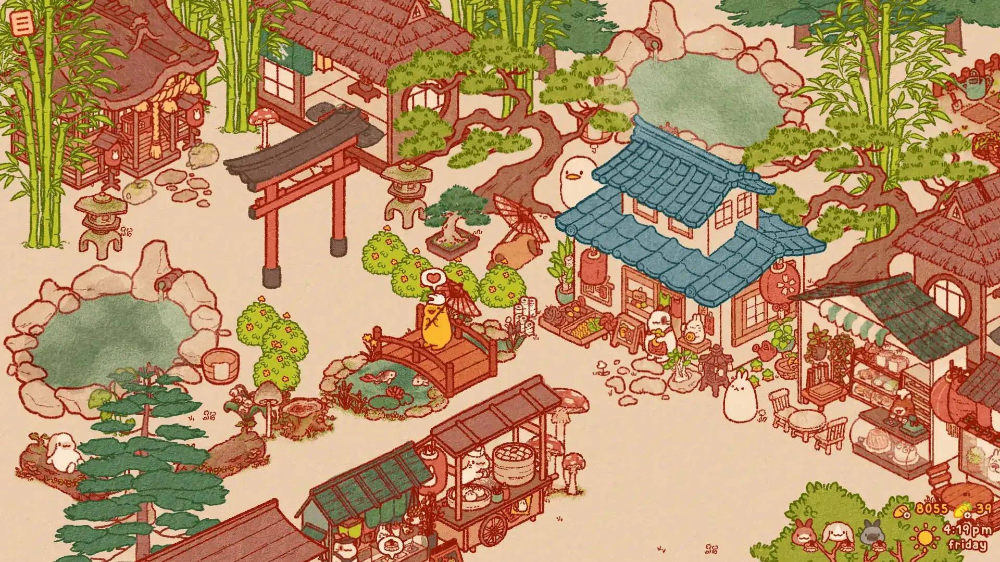
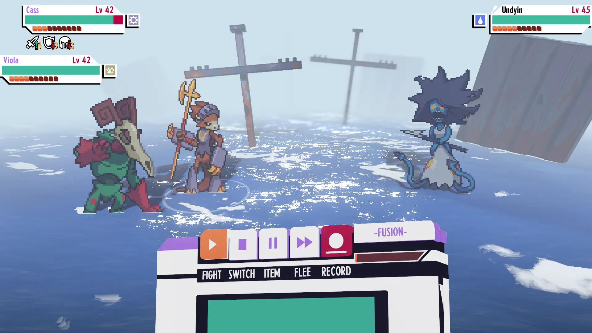
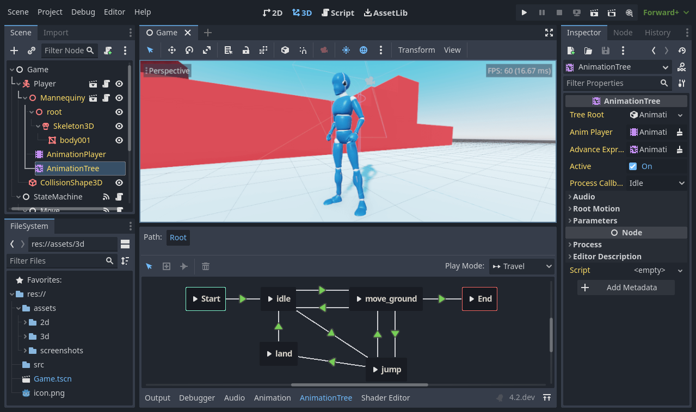

Introduction to Godot
This article is here to help you figure out whether Godot might be a good fit for you. We will introduce some broad features of the engine to give you a feel for what you can achieve with it and answer questions such as "what do I need to know to get started?".
This is by no means an exhaustive overview. We will introduce many more features in this getting started series.
What is Godot?
Godot is a general-purpose 2D and 3D game engine designed to support all sorts of projects. You can use it to create games or applications you can then release on desktop or mobile, as well as on the web.
You can also create console games with it, although you either need strong programming skills or a developer to port the game for you.
Note
For information about console support, see the Godot website.
What can the engine do?
Godot was initially developed in-house by an Argentinian game studio. Its development started in 2001, and the engine was rewritten and improved tremendously since its open source release in 2014.
Some examples of games created with Godot include Cassette Beasts, PVKK, and Usagi Shima. As for applications, the open source pixel art drawing program Pixelorama is powered by Godot, and so is the voxel RPG creator RPG in a Box. You can find many more examples in the Official Showcase.

Usagi Shima

Cassette Beasts

PVKK: Planetenverteidigungskanonenkommandant

RPG in a Box
How does it work and look?
Godot comes with a fully-fledged game editor with integrated tools to answer the most common needs. It includes a code editor, an animation editor, a tilemap editor, a shader editor, a debugger, a profiler, and more.

The team strives to offer a feature-rich game editor with a consistent user experience. While there is always room for improvement, the user interface keeps getting refined.
Of course, if you prefer, you can work with external programs. We officially support importing 3D scenes designed in Blender and maintain plugins to code in VSCode and Emacs for GDScript and C#. We also support Visual Studio for C# on Windows.

Programming languages
Let's talk about the available programming languages.
You can code your games using GDScript, a Godot-specific and tightly integrated language with a lightweight syntax, or C#, which is popular in the games industry. These are the two main scripting languages we support.
With the GDExtension technology, you can also write gameplay or high-performance algorithms in C++ or other languages without recompiling the engine. You can use this technology to integrate third-party libraries and other Software Development Kits (SDK) in the engine.
Of course, you can also directly add modules and features to the engine, as it's completely free and open source.
What do I need to know to use Godot?
Godot is a feature-packed game engine. With its thousands of features, there is a lot to learn. To make the most of it, you need good programming foundations. While we try to make the engine accessible, you will benefit a lot from knowing how to think like a programmer first.
Godot relies on the object-oriented programming paradigm. Being comfortable with concepts such as classes and objects will help you code efficiently in it.
If you are entirely new to programming, GDQuest's Learn GDScript From Zero is a free and open source interactive tutorial for absolute beginners to learn to program with Godot's GDScript language. It is available as a desktop application or in the browser.
We will provide you with more Godot-specific learning resources in Learning new features.
In the next part, you will get an overview of the engine's essential concepts.